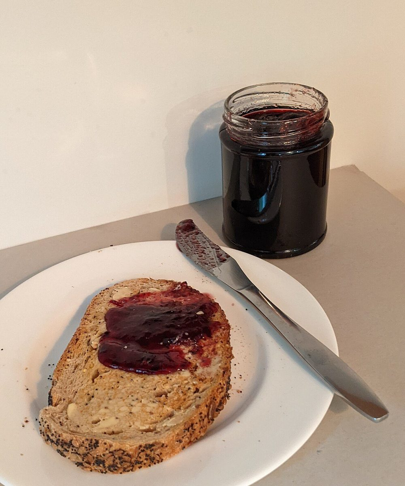
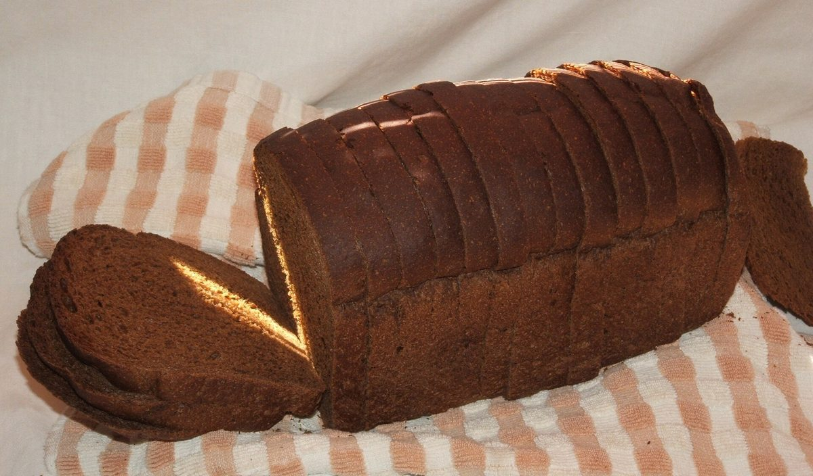
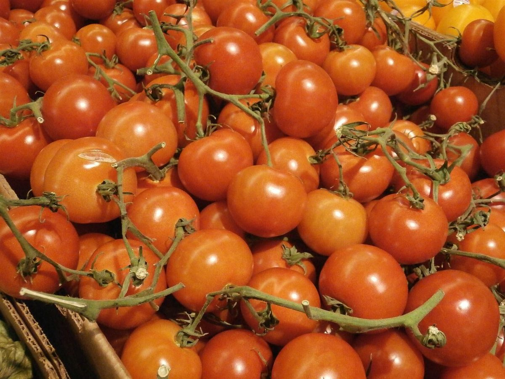

ベーカリー / 三重県松阪市西之庄町
サンクベーカリー
制作側の連想
基本の五つの味から、五枚の見本札を。
屋号の由来は分かりません。制作側は「サンク」という響きから、数の「五」を連想しました。そこでこのページは、味覚の基本とされる五つ(甘味・酸味・塩味・苦味・うま味)を色札にして並べる作りにしています。制作側の連想で、お店の理念・由来とは無関係です。写真もお店のものではなく、色や雰囲気で選んだイメージです。
五つの味見札(イメージ)
甘・酸・塩・苦・旨
写真は国外・撮影地不明のフリー素材で、お店の商品ではありません。お店が何を提供しているかを示すものでもありません。
- 甘あま

国外のイメージ(英国) 01ジャムをのせたトースト写真から「甘」を連想
- 酸さん

撮影地不明のイメージ 02気泡の多い断面の写真から「酸」を連想
- 塩えん

国外のイメージ(米国) 03つやのあるロール写真から「塩」を連想
- 苦にが

撮影地不明のイメージ 04黒に近い茶色の写真から「苦」を連想
- 旨うま

国外のイメージ(米国) 05完熟の赤い実の写真から「旨」を連想
ご案内
お店のこと(確認できたものだけ)
| 所在地 | 〒515-0816 三重県松阪市西之庄町８５−５ |
|---|---|
| 電話 | 0598-67-6255 |
| 営業時間 | 準備中 |
| 定休日 | 準備中 |
| ご予約 | 準備中 |
| 駐車場 | 準備中 |
| SNS | Instagram @cinq_bakery |